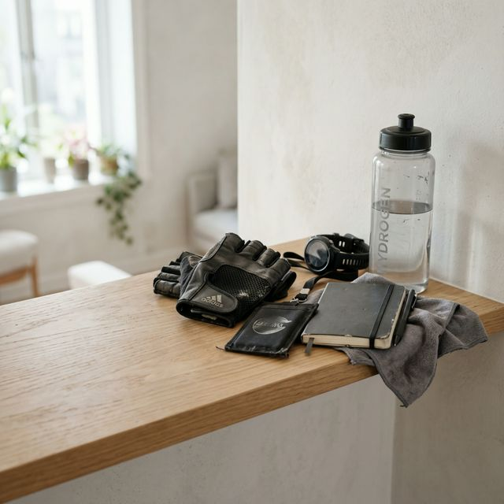
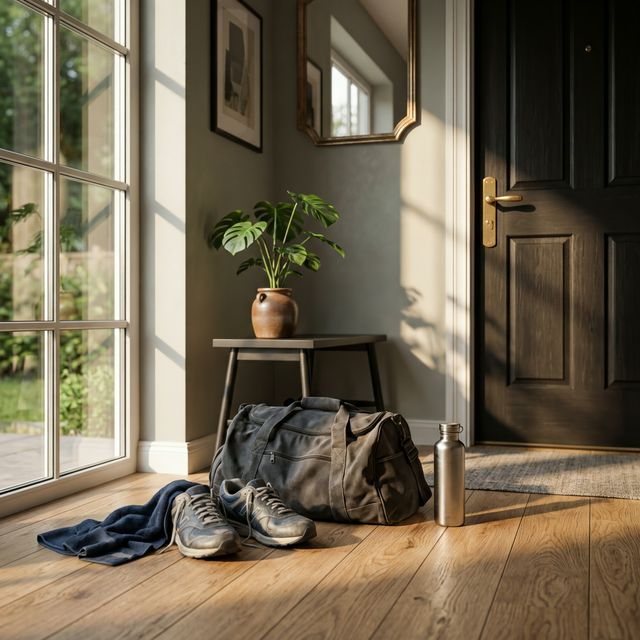
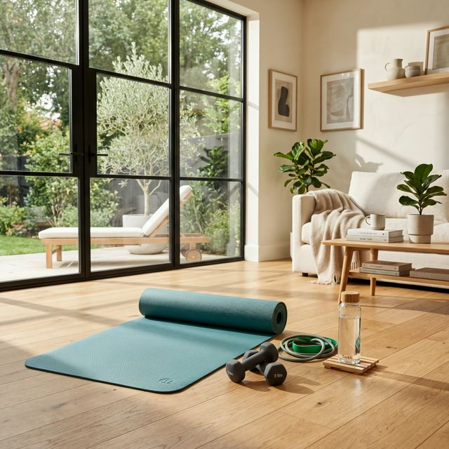
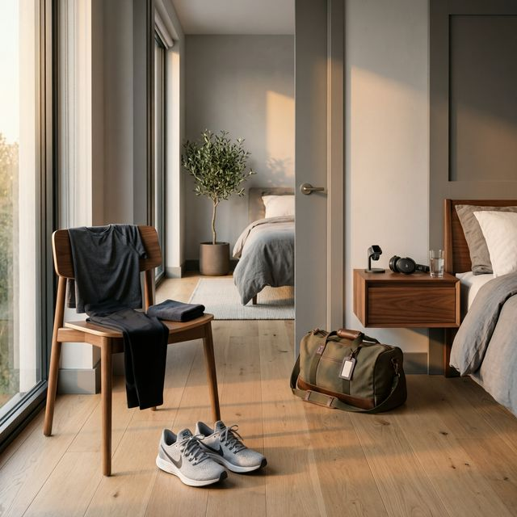

Zacząłeś ćwiczyć. Było świetnie przez kilka tygodni. A potem w jakiś poniedziałek wstałeś rano i po prostu... nie chciało Ci się. I tak minął poniedziałek. Potem środa. Potem cały tydzień. Znasz to? Prawie każdy zna. I prawie każdy myśli, że to jego problem, jego słabość, jego brak charakteru. Tymczasem to jest biologia. I biologia ma na to odpowiedź.
Prawda, którą nikt Ci nie powiedział: motywacja jest zaprojektowana żeby znikać
Zacznijmy od rzeczy, którą trzeba powiedzieć wprost: oczekiwanie, że motywacja do ćwiczenia będzie stała i silna przez cały czas, jest biologicznie nieuzasadnione. Dosłownie. Twój mózg jest ewolucyjnie zaprojektowany do tego, żeby szukać powodów do NIErobienia rzeczy, które kosztują energię bez natychmiastowej nagrody.
Bieganie, siłownia, pompki — z perspektywy mózgu sprzed 200 000 lat to czyste marnotrawstwo kalorii. Nie polujemy. Nie uciekamy. Po co? Mózg protestuje. I to jest fizjologia, nie lenistwo.
Źródło: André N. et al. (2024). A Behavioral Perspective for Improving Exercise Adherence. Sports Medicine — Open, 10:56. doi: 10.1186/s40798-024-00714-8
Kiedy motywacja znika najczęściej — trzy momenty które zna prawie każdy
Moment 1: Tydzień 3–6 — efekt nowości minął
Pierwsze tygodnie na siłowni mają jedno: są nowe. A co nowe — dostaje dodatkową dawkę dopaminy. Mózg jest podniecony, motywacja wysoka, wychodzisz ze siłowni z uśmiechem. Potem nowość mija. I motywacja razem z nią. To nie Twoja wina. To dopamina.

Źródło: Habit Formation Insights From a Comprehensive Fitness Study (2025). arXiv: 2501.01779. https://arxiv.org/abs/2501.01779
Moment 2: Tydzień 8–12 — efekty nie są tak widoczne jak się spodziewałeś
To jest ten moment. Przez dwa miesiące ćwiczyłeś sumiennie. Patrzysz w lustro. I... no, niespecjalnie różnica. Kumple nie komentują. Waga stoi w miejscu. Zaczynasz myśleć: to chyba nie działa.
Moment 3: Jeden opuszczony tydzień — i spirala
Było ciężko w pracy. Albo choroba. Albo po prostu tydzień się posypał. Nie poszedłeś na siłownię przez dwa tygodnie. I nagle wracanie staje się trudniejsze niż zaczynanie było. Pojawia się poczucie winy, które paradoksalnie utrudnia powrót.
To jest znane zjawisko psychologiczne: im dłużej odkładamy powrót, tym bardziej go idealizujemy i tym bardziej się go boimy. Łatwą sesję zamieniamy w głowie na coś wielkiego — i nie idziemy, bo to coś wielkiego wydaje się za ciężkie.

Jak przez to przejść — konkretnie, bez ogólników
1. Zmień pytanie, które sobie zadajesz
Zamiast pytać siebie: czy mam ochotę dziś iść na siłownię? — zadaj inne pytanie: czy jestem osobą, która dba o swoje zdrowie?
To brzmi jak magia słów. Ale ma solidne podstawy naukowe. Pytanie o tożsamość zamiast o chęć chwili powoduje, że decyzja zapada automatycznie. Osoba, która dba o zdrowie — idzie na siłownię. Nie ma tu co analizować.
Źródło: Self-Determination Theory (SDT), Ryan & Deci (2000). Vuckovic et al. (2025). Motivation as the Key Factor to Exercise Adherence. British Journal of Healthcare and Medical Research, 12(02), 318–341.
2. Zasada dwu minut
W dniu kryzysu, kiedy najbardziej nie masz ochoty — umów się ze sobą na tylko dwie minuty. Przebierasz się w strój treningowy i jedziesz. Tylko tyle. Jeśli po dwóch minutach na siłowni chcesz iść do domu — idziesz. I tak jest dobrze, bo się pojawiłeś.
W 90% przypadków zostaniesz. Mózg, gdy już jest w ruchu, zmienia ocenę sytuacji. To co wyglądało jak niemożliwe z kanapy — nagle jest wykonalne. Psycholodzy nazywają to efektem pobudzenia behawioralnego.
3. Zmniejsz poprzeczkę w kryzysie
W normalnych tygodniach: 3 pełne sesje po 50 minut. W tygodniu kryzysu: 2 krótkie sesje po 25 minut. Cokolwiek. Byle się pojawić. Byle ciąg się nie urwał.
Wielu ludzi myśli zero-jedynkowo: albo pełny trening, albo nic. To jest pułapka. Połowa siłowni przez 25 minut to nie lenistwo — to strategia przetrwania nawyku w trudnych tygodniach. Nawyk chodzenia na siłownię nie może być przerwany, bo jego odbudowa jest wiele razy trudniejsza niż podtrzymanie.

Źródło: Gust A. et al. (2025). Journal of Health Psychology, 30(3).
4. Znajdź zewnętrzny punkt zakotwiczenia
Umów się z kimś na treningi. Zapisz się na zajęcia grupowe ze stałą godziną. Kup karnet z datą ważności. Zainwestuj w sprzęt. Cokolwiek, co sprawia, że niepójście na siłownię ma realny koszt.
Mózg jest zaprojektowany, żeby unikać strat. Jak już wydałeś pieniądze na karnet z grupą — nagle motywacja jest spora, bo „marnować pieniądze” jest fizycznie niekomfortowe.
Źródło: Gollwitzer P.M. (1999). American Psychologist. Snoke N. et al. (2024). Sports Medicine Open.
5. Zmień otoczenie, nie siłę woli
Wieszasz strój na krześle wieczorem. Pakujesz torbę zanim pójdziesz spać. Stawiasz buty przy drzwiach. To nie jest naiwny trik — to projektowanie środowiska, jedna z najlepiej przebadanych metod podtrzymywania nawyków. Mózg działa na sygnały. Im więcej sygnałów „idzie trening” — tym mniej energii ma na decyzję. Unikaj też największych błędów po 50-tce, które zniechęcają do ruchu.

Obalamy mity o motywacji — bo krąży ich za dużo
| MIT | FAKT |
|---|---|
| Zmotywowani ludzie po prostu mają silniejszy charakter. | Motywacja to nie charakter. To biologia, nawyki i zaprojektowane środowisko. Badania nie potwierdzają, żeby którakolwiek cecha osobowości była silnym predykatorem długotrwałej aktywności. |
| Trzeba poczekać na motywację, żeby zacząć. | Motywacja przychodzi po działaniu, nie przed. Ruszasz się — i dopiero wtedy się chce. Czekanie na motywację to czekanie na coś, co przyjdzie dopiero kiedy już zaczniesz. |
| Przerwa w ćwiczeniu niszczy cały postęp. | Badania pokazują, że kondycja spada nieznacznie po 1–2 tygodniach przerwy, a siła mięśniowa jest bardzo odporna na krótkie przerwy. Ciało pamięta — zużywa się wolniej niż budowało! |
| Jeśli nie czuję się lepiej po 2 tygodniach — trening nie jest dla mnie. | Pierwsze efekty psychiczne pojawiają się już po pierwszej sesji (nastrój, energia). Fizyczne — po 4–6 tygodniach. Kto rezygnuje wcześniej — rezygnuje tuż przed tym, kiedy naprawdę zaczyna działać. |
| Motywacja albo jest, albo jej nie ma. | Motywacja ma etapy i cykle. Naukowcy wyróżniają fazę wstępną (wysoka), fazę plateau (nieco niższa) i fazę podtrzymania (automatyczna). Znając te cykle, można się na nie przygotować. |
Po 50-tce jest jeden dodatkowy powód, żeby nie odpuszczać
Dla osób po pięćdziesiątce kryzys motywacji jest szczególnie kosztowny — i to nie dlatego, że jesteś starszy. Dlatego, że przy sarkopenii każdy tydzień bez ćwiczeń to realny ubytek masy mięśniowej, który trudniej odrobić niż w młodości.
Ale jest i dobra wiadomość: badania konsekwentnie pokazują, że osoby po 50-tce mają jedną przewagę nad młodszymi ćwiczącymi — są bardziej wytrwałe. Siłownia po 50-tce to miejsce, gdzie wewnętrzna motywacja — dla zdrowia, sprawności, niezależności — jest u starszych dorosłych silniejsza niż u młodszych, którzy ćwiczą głównie dla wyglądu.
Źródło: Journal of Health Psychology, 30(3).
Na koniec — bo to jest najważniejsze
Kryzys motywacji nie jest sygnałem, że powinieneś przestać. Jest sygnałem, że jesteś człowiekiem z normalnym mózgiem, który robi dokładnie to do czego ewolucja go zaprogramowała.
Różnica między tymi co osiągnęli zmianę a tymi co nie — nie jest w sile woli ani w motywacji. Jest w tym, że ci pierwsi wiedzą, że kryzys przyjdzie. Że wystarczy zmniejszyć poprzeczkę, nie rzucać w kąt.
Masz kryzys? Dobrze. Teraz wiesz, że to norma. Idź na te 25 minut. Nie dlatego że chcesz. Dlatego że jesteś osobą, która dba o siebie — i taka osoba idzie nawet kiedy nie chce.
Źródła i linki
- [1] André N. et al. (2024). A Behavioral Perspective for Improving Exercise Adherence. Sports Medicine — Open, 10:56. DOI: 10.1186/s40798-024-00714-8
- [2] Ryan RM, Deci EL (2000). Self-determination theory and the facilitation of intrinsic motivation, social development, and well-being. American Psychologist, 55(1), 68–78. Link
- [3] Gust A. et al. (2025). Effect of health conditions and community program participation on physical activity and exercise motivation in older adults. Journal of Health Psychology, 30(3). Link
- [4] Habit Formation Insights From a Comprehensive Fitness Study (2025). arXiv: 2501.01779. Link
- [5] Gollwitzer PM (1999). Implementation intentions: Strong effects of simple plans. American Psychologist, 54(7), 493–503. Link
- [6] Frontiers in Psychology — Editorial: Motivation for physical activity, volume II. Front. Psychol. 15:1533943. Link